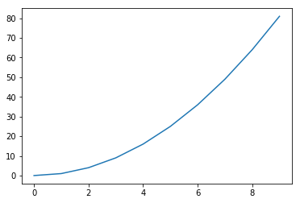

This is a test post for formatting Jupyter Notebooks for Hugo. This workflow makes use of the code at repository nb2hugo.
Cupiditate voluptas sunt velit. Accusantium aliquid expedita excepturi quis laborum autem. Quas occaecati et atque est repellat dolores. Laudantium in molestiae consequatur voluptate ipsa. Nulla quia non qui sed. Voluptatem et enim nesciunt sunt pariatur. Libero eius excepturi voluptatibus reprehenderit. Facere enim neque dolorem sed ullam non. Dolor sit molestias repellendus.
Section Headers
Cupiditate voluptas sunt velit. Accusantium aliquid expedita excepturi quis laborum autem. Quas occaecati et atque est repellat dolores. Laudantium in molestiae consequatur voluptate ipsa. Nulla quia non qui sed. Voluptatem et enim nesciunt sunt pariatur. Libero eius excepturi voluptatibus reprehenderit. Facere enim neque dolorem sed ullam non. Dolor sit molestias repellendus.
print('goodbye!')
goodbye!
Subsection headers
Cupiditate voluptas sunt velit. Accusantium aliquid expedita excepturi quis laborum autem. Quas occaecati et atque est repellat dolores. Laudantium in molestiae consequatur voluptate ipsa. Nulla quia non qui sed. Voluptatem et enim nesciunt sunt pariatur. Libero eius excepturi voluptatibus reprehenderit. Facere enim neque dolorem sed ullam non. Dolor sit molestias repellendus.
Subsection headers
Cupiditate voluptas sunt velit. Accusantium aliquid expedita excepturi quis laborum autem. Quas occaecati et atque est repellat dolores. Laudantium in molestiae consequatur voluptate ipsa. Nulla quia non qui sed. Voluptatem et enim nesciunt sunt pariatur. Libero eius excepturi voluptatibus reprehenderit. Facere enim neque dolorem sed ullam non. Dolor sit molestias repellendus.
Formatting Requirements
Markdown section
The post must conform to the following:
- notebook-filename_must_be_lowercase.ipynb
apply metadata formatting
# Formatting for Jupyter (.ipynb) Notebooks Date: 2019-05-08 Author: Jason Beach Categories: Blog, Category Tags: jupyter, tag <!--eofm-->notebook-name_must_be_lowercase.ipynb
#Title As Above (.ipynb) or part of metadata (.md)## All Second Sections (to ensure proper smartToc)### All third sectionsuse opening paragraph beneath metadata
ensure either output, or markdown cell, between code cells
reference other posts with absolute url:
[my post]( https://imtorgdemo.github.io/posts/blog_page-todo/#List-of-Future-Posts)add external references to documentation
[ref](http://domain.com)
Graphic section
import matplotlib.pyplot as plt
import numpy as np
a=[x for x in range(10)]
b=np.square(a)
plt.plot(a,b)
plt.show()

Final Section
Cupiditate voluptas sunt velit. Accusantium aliquid expedita excepturi quis laborum autem. Quas occaecati et atque est repellat dolores. Laudantium in molestiae consequatur voluptate ipsa. Nulla quia non qui sed. Voluptatem et enim nesciunt sunt pariatur. Libero eius excepturi voluptatibus reprehenderit. Facere enim neque dolorem sed ullam non. Dolor sit molestias repellendus.